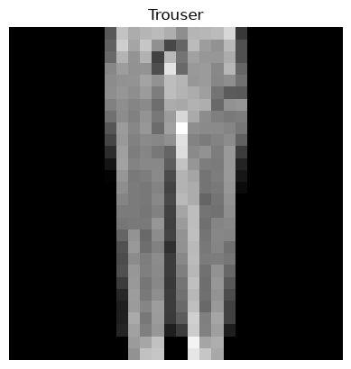
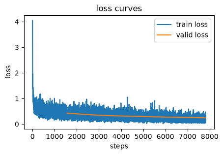

import torch
from torchvision import datasets, transforms
import matplotlib as mpl
from lucidlearn.nn import make_conv2d, make_layernorm2d, make_squeeze, make_linear
random_key = random.key(42)core
A transparent, concise machine learning framework in JAX inspired by
miniai from fastai/course22p2 and optimized for efficient TPU usage.
Small Helpers
Visualization Functions
def chunks(x, sz):
for i in range(0, len(x), sz): yield x[i:i+sz]
def show_data(fashion_image, label=None, is_1d=False):
if isinstance(fashion_image, tuple):
fig, ax = plt.subplots(1, len(fashion_image), figsize=(9, 3))
for i, x in enumerate(fashion_image):
ax[i].imshow(x)
ax[i].axis('off');
plt.show()
else:
mpl.rcParams['image.cmap'] = 'gray'
if label is not None:
plt.title(f"{idx_to_class[label.item()]}")
if is_1d==True:
plt.imshow(list(chunks(fashion_image, 28)));
else:
plt.imshow(fashion_image);
plt.axis('off');Load Fashion-MNIST
train_data = datasets.FashionMNIST(root="./data", train=True, download=True, transform=transforms.ToTensor())
test_data = datasets.FashionMNIST(root="./data", train=False, download=True, transform=transforms.ToTensor())
x_train_all = train_data.data[:, None, :, :]/255
y_train_all = train_data.targets
rand_idx = torch.randperm(x_train_all.shape[0])
x_train = x_train_all[rand_idx[:50_000]]
train_mean = x_train.mean()
train_std = x_train.std()
x_train = jnp.array((x_train - train_mean) / train_std)
y_train = jnp.array(y_train_all[rand_idx[:50_000]])
x_valid = jnp.array((x_train_all[rand_idx[50_000:]] - train_mean) / train_std)
y_valid = jnp.array(y_train_all[rand_idx[50_000:]])
x_test = jnp.array((test_data.data[:, None, :, :]/255 - train_mean) / train_std)
y_test = jnp.array(test_data.targets)
x_train.shape, y_train.shape, x_valid.shape, y_valid.shape, x_test.shape, y_test.shape,((50000, 1, 28, 28),
(50000,),
(10000, 1, 28, 28),
(10000,),
(10000, 1, 28, 28),
(10000,))idx_to_class = {value: key for key, value in train_data.class_to_idx.items()}
num_classes = len(idx_to_class)
idx_to_class, num_classes({0: 'T-shirt/top',
1: 'Trouser',
2: 'Pullover',
3: 'Dress',
4: 'Coat',
5: 'Sandal',
6: 'Shirt',
7: 'Sneaker',
8: 'Bag',
9: 'Ankle boot'},
10)DataLoaders
train_ds = Dataset(x_train, y_train)
valid_ds = Dataset(x_valid, y_valid)
test_ds = Dataset(x_test, y_test)show_data(x_train[0].squeeze(), y_train[0])
DataLoader
def DataLoader(
dataset, batch_size:int=32, drop_last:bool=False, shuffle:bool=True, random_key:NoneType=None
):Returns iterable batches from a dataset
test_train_ds = Dataset(x_train[:-1], y_train[:-1])test_dataloader = DataLoader(test_train_ds, batch_size = 2)
test_generator = iter(test_dataloader)
next(test_generator)(Array([[[[-0.8102359 , -0.8102359 , -0.8102359 , ..., -0.8102359 ,
-0.8102359 , -0.8102359 ],
[-0.8102359 , -0.8102359 , -0.8102359 , ..., -0.8102359 ,
-0.8102359 , -0.8102359 ],
[-0.8102359 , -0.8102359 , -0.8102359 , ..., -0.8102359 ,
-0.8102359 , -0.8102359 ],
...,
[-0.8102359 , -0.8102359 , -0.8102359 , ..., -0.8102359 ,
-0.8102359 , -0.8102359 ],
[-0.8102359 , -0.8102359 , -0.8102359 , ..., -0.8102359 ,
-0.8102359 , -0.8102359 ],
[-0.8102359 , -0.8102359 , -0.8102359 , ..., -0.8102359 ,
-0.8102359 , -0.8102359 ]]],
[[[-0.8102359 , -0.8102359 , -0.8102359 , ..., -0.8102359 ,
-0.8102359 , -0.8102359 ],
[-0.8102359 , -0.8102359 , -0.8102359 , ..., -0.8102359 ,
-0.8102359 , -0.8102359 ],
[-0.8102359 , -0.8102359 , -0.8102359 , ..., -0.8102359 ,
-0.8102359 , -0.8102359 ],
...,
[-0.8102359 , -0.8102359 , -0.8102359 , ..., -0.01067519,
-0.8102359 , -0.8102359 ],
[-0.8102359 , -0.8102359 , -0.8102359 , ..., -0.8102359 ,
-0.8102359 , -0.8102359 ],
[-0.8102359 , -0.8102359 , -0.8102359 , ..., -0.8102359 ,
-0.8102359 , -0.8102359 ]]]], dtype=float32),
Array([8, 5], dtype=int32))len(test_dataloader)25000test_dataloader = DataLoader(test_train_ds, batch_size = 2, drop_last=True)
test_generator = iter(test_dataloader)
next(test_generator)(Array([[[[-0.8102359 , -0.8102359 , -0.8102359 , ..., -0.8102359 ,
-0.8102359 , -0.8102359 ],
[-0.8102359 , -0.8102359 , -0.8102359 , ..., -0.8102359 ,
-0.8102359 , -0.8102359 ],
[-0.8102359 , -0.8102359 , -0.8102359 , ..., -0.8102359 ,
-0.8102359 , -0.8102359 ],
...,
[-0.8102359 , -0.8102359 , -0.8102359 , ..., -0.8102359 ,
-0.8102359 , -0.8102359 ],
[-0.8102359 , -0.8102359 , -0.8102359 , ..., -0.8102359 ,
-0.8102359 , -0.8102359 ],
[-0.8102359 , -0.8102359 , -0.8102359 , ..., -0.8102359 ,
-0.8102359 , -0.8102359 ]]],
[[[-0.8102359 , -0.8102359 , -0.8102359 , ..., -0.8102359 ,
-0.8102359 , -0.8102359 ],
[-0.8102359 , -0.8102359 , -0.8102359 , ..., -0.8102359 ,
-0.8102359 , -0.8102359 ],
[-0.8102359 , -0.8102359 , -0.8102359 , ..., -0.8102359 ,
-0.8102359 , -0.8102359 ],
...,
[-0.8102359 , -0.8102359 , -0.8102359 , ..., -0.01067519,
-0.8102359 , -0.8102359 ],
[-0.8102359 , -0.8102359 , -0.8102359 , ..., -0.8102359 ,
-0.8102359 , -0.8102359 ],
[-0.8102359 , -0.8102359 , -0.8102359 , ..., -0.8102359 ,
-0.8102359 , -0.8102359 ]]]], dtype=float32),
Array([8, 5], dtype=int32))len(test_dataloader)24999bs = 32
train_dl = DataLoader(train_ds, batch_size=bs, shuffle=True)
valid_dl = DataLoader(valid_ds, batch_size=bs, shuffle=True)
test_dl = DataLoader(test_ds, batch_size=bs, shuffle=False)DataLoaders
def DataLoaders(
*dls
):Combines training and validation data in a DataLoaders object that can be passed to a learner.
dls = DataLoaders(train_dl, valid_dl)
dls.train, dls.valid(<__main__.DataLoader>,
<__main__.DataLoader>)one_batch = next(iter(dls.train))[0]
one_batch.shape(32, 1, 28, 28)Learner and Callbacks
CancelEpochException
def CancelEpochException(
*args, **kwargs
):Common base class for all non-exit exceptions.
CancelBatchException
def CancelBatchException(
*args, **kwargs
):Common base class for all non-exit exceptions.
CancelFitException
def CancelFitException(
*args, **kwargs
):Common base class for all non-exit exceptions.
Learner
def Learner(
model, params, dls:tuple=(0,), loss_func:function=softmax_cross_entropy_with_integer_labels, lr:float=0.001,
cbs:NoneType=None, opt:function=sgd, random_key:NoneType=None
):Metrics
Advanced Model Factory
make_model
def make_model(
key, model_dict, **defaults
):Compose make_* layers in model_dict into a single (params, fn) pair.
model_dict = {'Conv2d_1': {'make_fn': make_conv2d, 'args': (8, 1), 'kwargs': {'strides': (2, 2), 'act': True}},
'LayerNorm_1': {'make_fn': make_layernorm2d, 'args': (8,), 'kwargs': {'ndims': 4}},
'Conv2d_2': {'make_fn': make_conv2d, 'args': (16, 8), 'kwargs': {'strides': (2, 2), 'act': True}},
'LayerNorm_2': {'make_fn': make_layernorm2d, 'args': (16,), 'kwargs': {'ndims': 4}},
'Conv2d_3': {'make_fn': make_conv2d, 'args': (32, 16), 'kwargs': {'padding': 'VALID', 'strides': (2, 2), 'act': True}},
'LayerNorm_3': {'make_fn': make_layernorm2d, 'args': (32,), 'kwargs': {'ndims': 4}},
'Conv2d_4': {'make_fn': make_conv2d, 'args': (64, 32), 'kwargs': {'padding': 'VALID', 'strides': (1, 1), 'act': True}},
'LayerNorm_4': {'make_fn': make_layernorm2d, 'args': (64,), 'kwargs': {'ndims': 4}},
'Squeeze' : {'make_fn': make_squeeze, 'args': (), 'kwargs': {'dims': (2, 3)}},
'Linear_1': {'make_fn': make_linear, 'args': (64, num_classes), 'kwargs': {'act': False}}}params, model = make_model(random_key, model_dict)n_parameters(params)
list_layers(params)Number of Model Parameters: 25274
Model Layers:
Conv2d_1
LayerNorm_1
Conv2d_2
LayerNorm_2
Conv2d_3
LayerNorm_3
Conv2d_4
LayerNorm_4
Squeeze
Linear_1model(params, one_batch).shape(32, 10)Training
dls = DataLoaders(train_dl, valid_dl)
params, model = make_model(random_key, model_dict)
metrics = MetricsCB(accuracy)
progress = ProgressCB()
lr_rec = LRRecorderCB()
loss_rec = LossRecorderCB()
cbs = [DeviceParallelCB(), OneCycleCB(), metrics, lr_rec, loss_rec, progress]
learn = Learner(model, params, dls, loss_func=optax.softmax_cross_entropy_with_integer_labels, lr=0.01, cbs=cbs, opt=optax.adamw)print(metrics)accuracymetricsaccuracy
learn.fit(5)
train 0/1563 ( 0%) 0s loss=4.0507
train 50/1563 ( 3%) 1s loss=0.7899
train 100/1563 ( 6%) 1s loss=0.7520
train 150/1563 ( 10%) 1s loss=0.5773
train 200/1563 ( 13%) 1s loss=0.5539
train 250/1563 ( 16%) 2s loss=0.6439
train 300/1563 ( 19%) 2s loss=0.7934
train 350/1563 ( 22%) 2s loss=0.5621
train 400/1563 ( 26%) 2s loss=0.4673
train 450/1563 ( 29%) 2s loss=0.4236
train 500/1563 ( 32%) 3s loss=0.5838
train 550/1563 ( 35%) 3s loss=0.6241
train 600/1563 ( 38%) 3s loss=0.4254
train 650/1563 ( 42%) 3s loss=0.5866
train 700/1563 ( 45%) 3s loss=0.5117
train 750/1563 ( 48%) 4s loss=0.3466
train 800/1563 ( 51%) 4s loss=0.5461
train 850/1563 ( 54%) 4s loss=0.6606
train 900/1563 ( 58%) 4s loss=0.3345
train 950/1563 ( 61%) 4s loss=0.2842
train 1000/1563 ( 64%) 5s loss=0.4864
train 1050/1563 ( 67%) 5s loss=0.2354
train 1100/1563 ( 70%) 5s loss=0.6745
train 1150/1563 ( 74%) 5s loss=0.4779
train 1200/1563 ( 77%) 6s loss=0.4604
train 1250/1563 ( 80%) 6s loss=0.5209
train 1300/1563 ( 83%) 6s loss=0.3361
train 1350/1563 ( 86%) 6s loss=0.2051
train 1400/1563 ( 90%) 6s loss=0.1721
train 1450/1563 ( 93%) 7s loss=0.4354
train 1500/1563 ( 96%) 7s loss=0.3574
train 1550/1563 ( 99%) 7s loss=0.5581
Epoch accuracy loss Mode
----------------------------------------
0 0.8127 0.5232 train
eval 0/313 ( 0%) 0s loss=0.3762
eval 50/313 ( 16%) 0s loss=0.4760
eval 100/313 ( 32%) 0s loss=0.4972
eval 150/313 ( 48%) 0s loss=0.4830
eval 200/313 ( 64%) 1s loss=0.5836
eval 250/313 ( 80%) 1s loss=0.3962
eval 300/313 ( 96%) 1s loss=0.2463
0 0.8427 0.4228 eval
train 0/1563 ( 0%) 0s loss=0.2772
train 50/1563 ( 3%) 0s loss=0.4397
train 100/1563 ( 6%) 0s loss=0.2985
train 150/1563 ( 10%) 1s loss=0.6054
train 200/1563 ( 13%) 1s loss=0.3769
train 250/1563 ( 16%) 1s loss=0.3980
train 300/1563 ( 19%) 1s loss=0.2722
train 350/1563 ( 22%) 1s loss=0.2894
train 400/1563 ( 26%) 2s loss=0.4151
train 450/1563 ( 29%) 2s loss=0.2221
train 500/1563 ( 32%) 2s loss=0.4011
train 550/1563 ( 35%) 2s loss=0.3078
train 600/1563 ( 38%) 2s loss=0.2434
train 650/1563 ( 42%) 3s loss=0.2936
train 700/1563 ( 45%) 3s loss=0.1496
train 750/1563 ( 48%) 3s loss=0.5957
train 800/1563 ( 51%) 3s loss=0.3572
train 850/1563 ( 54%) 4s loss=0.2920
train 900/1563 ( 58%) 4s loss=0.2983
train 950/1563 ( 61%) 4s loss=0.4651
train 1000/1563 ( 64%) 4s loss=0.5049
train 1050/1563 ( 67%) 4s loss=0.3218
train 1100/1563 ( 70%) 5s loss=0.5373
train 1150/1563 ( 74%) 5s loss=0.3342
train 1200/1563 ( 77%) 5s loss=0.2270
train 1250/1563 ( 80%) 5s loss=0.6468
train 1300/1563 ( 83%) 5s loss=0.2269
train 1350/1563 ( 86%) 6s loss=0.3676
train 1400/1563 ( 90%) 6s loss=0.5573
train 1450/1563 ( 93%) 6s loss=0.2115
train 1500/1563 ( 96%) 6s loss=0.3253
train 1550/1563 ( 99%) 6s loss=0.3152
1 0.8651 0.3659 train
eval 0/313 ( 0%) 0s loss=0.3912
eval 50/313 ( 16%) 0s loss=0.4002
eval 100/313 ( 32%) 0s loss=0.3925
eval 150/313 ( 48%) 0s loss=0.2623
eval 200/313 ( 64%) 0s loss=0.5411
eval 250/313 ( 80%) 0s loss=0.3389
eval 300/313 ( 96%) 1s loss=0.1451
1 0.8788 0.3366 eval
train 0/1563 ( 0%) 0s loss=0.3479
train 50/1563 ( 3%) 0s loss=0.5217
train 100/1563 ( 6%) 0s loss=0.1162
train 150/1563 ( 10%) 1s loss=0.2469
train 200/1563 ( 13%) 1s loss=0.3976
train 250/1563 ( 16%) 1s loss=0.1215
train 300/1563 ( 19%) 1s loss=0.1921
train 350/1563 ( 22%) 1s loss=0.2764
train 400/1563 ( 26%) 2s loss=0.5716
train 450/1563 ( 29%) 2s loss=0.5203
train 500/1563 ( 32%) 2s loss=0.2434
train 550/1563 ( 35%) 2s loss=0.3258
train 600/1563 ( 38%) 2s loss=0.1881
train 650/1563 ( 42%) 3s loss=0.2451
train 700/1563 ( 45%) 3s loss=0.4409
train 750/1563 ( 48%) 3s loss=0.6365
train 800/1563 ( 51%) 3s loss=0.1963
train 850/1563 ( 54%) 4s loss=0.4191
train 900/1563 ( 58%) 4s loss=0.3952
train 950/1563 ( 61%) 4s loss=0.4570
train 1000/1563 ( 64%) 4s loss=0.2034
train 1050/1563 ( 67%) 4s loss=0.2375
train 1100/1563 ( 70%) 5s loss=0.1596
train 1150/1563 ( 74%) 5s loss=0.2851
train 1200/1563 ( 77%) 5s loss=0.3668
train 1250/1563 ( 80%) 5s loss=0.4976
train 1300/1563 ( 83%) 5s loss=0.1829
train 1350/1563 ( 86%) 6s loss=0.4627
train 1400/1563 ( 90%) 6s loss=0.4035
train 1450/1563 ( 93%) 6s loss=0.2812
train 1500/1563 ( 96%) 6s loss=0.2276
train 1550/1563 ( 99%) 6s loss=0.3923
2 0.8868 0.3043 train
eval 0/313 ( 0%) 0s loss=0.2164
eval 50/313 ( 16%) 0s loss=0.3471
eval 100/313 ( 32%) 0s loss=0.5236
eval 150/313 ( 48%) 0s loss=0.2557
eval 200/313 ( 64%) 0s loss=0.2566
eval 250/313 ( 80%) 0s loss=0.2170
eval 300/313 ( 96%) 1s loss=0.2506
2 0.8907 0.2986 eval
train 0/1563 ( 0%) 0s loss=0.2257
train 50/1563 ( 3%) 0s loss=0.1991
train 100/1563 ( 6%) 0s loss=0.5137
train 150/1563 ( 10%) 1s loss=0.3942
train 200/1563 ( 13%) 1s loss=0.2358
train 250/1563 ( 16%) 1s loss=0.2052
train 300/1563 ( 19%) 1s loss=0.2611
train 350/1563 ( 22%) 1s loss=0.1179
train 400/1563 ( 26%) 2s loss=0.1189
train 450/1563 ( 29%) 2s loss=0.3238
train 500/1563 ( 32%) 2s loss=0.2550
train 550/1563 ( 35%) 2s loss=0.2215
train 600/1563 ( 38%) 3s loss=0.1234
train 650/1563 ( 42%) 3s loss=0.2323
train 700/1563 ( 45%) 3s loss=0.1487
train 750/1563 ( 48%) 3s loss=0.1721
train 800/1563 ( 51%) 3s loss=0.3170
train 850/1563 ( 54%) 4s loss=0.0906
train 900/1563 ( 58%) 4s loss=0.2116
train 950/1563 ( 61%) 4s loss=0.2360
train 1000/1563 ( 64%) 4s loss=0.1814
train 1050/1563 ( 67%) 4s loss=0.2395
train 1100/1563 ( 70%) 5s loss=0.3631
train 1150/1563 ( 74%) 5s loss=0.1188
train 1200/1563 ( 77%) 5s loss=0.1991
train 1250/1563 ( 80%) 5s loss=0.2684
train 1300/1563 ( 83%) 5s loss=0.5318
train 1350/1563 ( 86%) 6s loss=0.4550
train 1400/1563 ( 90%) 6s loss=0.1978
train 1450/1563 ( 93%) 6s loss=0.3506
train 1500/1563 ( 96%) 6s loss=0.3544
train 1550/1563 ( 99%) 7s loss=0.1454
3 0.9076 0.2451 train
eval 0/313 ( 0%) 0s loss=0.1181
eval 50/313 ( 16%) 0s loss=0.3529
eval 100/313 ( 32%) 0s loss=0.2346
eval 150/313 ( 48%) 0s loss=0.1884
eval 200/313 ( 64%) 0s loss=0.1751
eval 250/313 ( 80%) 0s loss=0.3840
eval 300/313 ( 96%) 1s loss=0.6596
3 0.9045 0.2678 eval
train 0/1563 ( 0%) 0s loss=0.4065
train 50/1563 ( 3%) 0s loss=0.1441
train 100/1563 ( 6%) 0s loss=0.3152
train 150/1563 ( 10%) 1s loss=0.1694
train 200/1563 ( 13%) 1s loss=0.1354
train 250/1563 ( 16%) 1s loss=0.3265
train 300/1563 ( 19%) 1s loss=0.2994
train 350/1563 ( 22%) 2s loss=0.3137
train 400/1563 ( 26%) 2s loss=0.5508
train 450/1563 ( 29%) 2s loss=0.1477
train 500/1563 ( 32%) 2s loss=0.1257
train 550/1563 ( 35%) 2s loss=0.2428
train 600/1563 ( 38%) 3s loss=0.1384
train 650/1563 ( 42%) 3s loss=0.0698
train 700/1563 ( 45%) 3s loss=0.0898
train 750/1563 ( 48%) 3s loss=0.0873
train 800/1563 ( 51%) 3s loss=0.3249
train 850/1563 ( 54%) 4s loss=0.4702
train 900/1563 ( 58%) 4s loss=0.2414
train 950/1563 ( 61%) 4s loss=0.1032
train 1000/1563 ( 64%) 4s loss=0.2409
train 1050/1563 ( 67%) 5s loss=0.1438
train 1100/1563 ( 70%) 5s loss=0.1378
train 1150/1563 ( 74%) 5s loss=0.3089
train 1200/1563 ( 77%) 5s loss=0.3228
train 1250/1563 ( 80%) 5s loss=0.0633
train 1300/1563 ( 83%) 6s loss=0.3328
train 1350/1563 ( 86%) 6s loss=0.1609
train 1400/1563 ( 90%) 6s loss=0.1727
train 1450/1563 ( 93%) 6s loss=0.1616
train 1500/1563 ( 96%) 6s loss=0.1299
train 1550/1563 ( 99%) 7s loss=0.3514
4 0.9294 0.1891 train
eval 0/313 ( 0%) 0s loss=0.4121
eval 50/313 ( 16%) 0s loss=0.1093
eval 100/313 ( 32%) 0s loss=0.1559
eval 150/313 ( 48%) 0s loss=0.2811
eval 200/313 ( 64%) 0s loss=0.2020
eval 250/313 ( 80%) 0s loss=0.3088
eval 300/313 ( 96%) 1s loss=0.1345
4 0.9120 0.2459 evalloss_rec.plot()
print(metrics)Epoch accuracy loss Mode
----------------------------------------
0 0.8127 0.5232 train
0 0.8427 0.4228 eval
1 0.8651 0.3659 train
1 0.8788 0.3366 eval
2 0.8868 0.3043 train
2 0.8907 0.2986 eval
3 0.9076 0.2451 train
3 0.9045 0.2678 eval
4 0.9294 0.1891 train
4 0.9120 0.2459 evalmetrics| Epoch | accuracy | loss | Mode |
|---|---|---|---|
| 0 | 0.8127 | 0.5232 | train |
| 0 | 0.8427 | 0.4228 | eval |
| 1 | 0.8651 | 0.3659 | train |
| 1 | 0.8788 | 0.3366 | eval |
| 2 | 0.8868 | 0.3043 | train |
| 2 | 0.8907 | 0.2986 | eval |
| 3 | 0.9076 | 0.2451 | train |
| 3 | 0.9045 | 0.2678 | eval |
| 4 | 0.9294 | 0.1891 | train |
| 4 | 0.9120 | 0.2459 | eval |